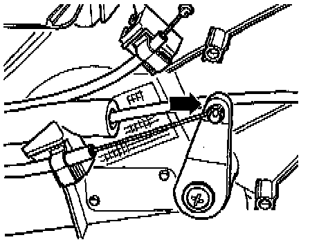
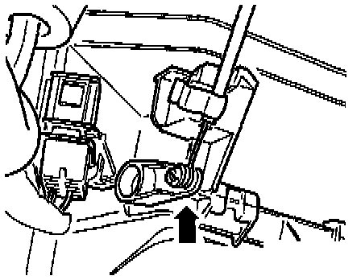

With A/C
Cable Identification:

1 Temperature flap cable
- Connects temperature control knob to temperature flap
- Blue sleeve
- Length: 585 mm (23.0 in.)
2 Footwell/defroster flap cable
- Connects air flow distribution knob (upper control lever) to footwell/defroster flap
- Black sleeve
- Length: 488 mm (19.2 in.)
3 Central flap cable
- Connects air flow distribution knob (lower control lever) to central flap
- Black sleeve
- Length: 639 mm (25.2 in.)
Adjusting Temperature Flap Cable:

Adjusting temperature flap cable
- Adjust temperature control knob to full cold.
- Connect temperature flap cable (blue sleeve) to temperature flap lever.
- Push lever in direction of arrow to stop.
- Hold lever in this position and install cable retaining clip.
Adjusting Footwell/Defroster Flap Cable:

Adjusting footwell/defroster flap cable
- Adjust air flow distribution knob to defrost position (against stop).
- Connect footwell/defroster flap cable (black sleeve) to foot-well/defroster flap lever.
- Push lever in direction of arrow to stop.
- Hold lever in this position and install cable retaining clip.
Adjusting Central Flap Cable:

Adjusting central flap cable
- Adjust air flow distribution knob to defrost position (against stop).
- Connect central flap cable (black sleeve) to central flap lever.
- Push lever in direction of arrow to stop.
- Hold lever in this position and install cable retaining clip.